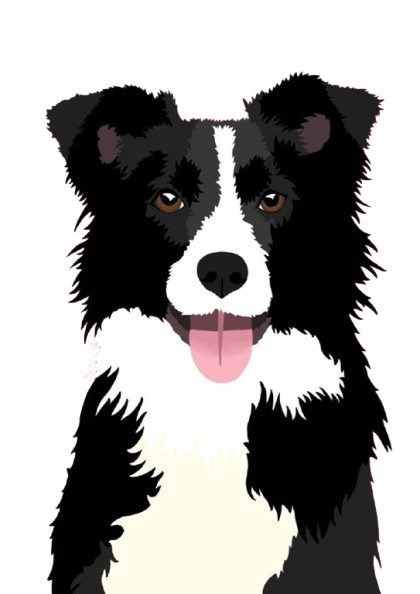

En Patitas Perdidas ayudamos a reunir mascotas con sus familias. Cada publicación es una oportunidad para que una patita regrese a casa.
En Patitas Perdidas buscamos crear un espacio de esperanza y reunión. Nuestro objetivo es facilitar el reencuentro entre mascotas perdidas y sus familias a través de una plataforma accesible, segura y comunitaria. Creemos que cada mascota merece volver a casa y cada familia merece reencontrarse con su mejor amigo. Trabajamos incansablemente para hacer que esto sea posible.

Cada pequeña contribución cuenta. Si crees en nuestra misión de reunir mascotas con sus familias, puedes apoyarnos de varias formas. Tu ayuda es fundamental para que cada patita perdida tenga una oportunidad de volver a casa.
✨ Con tu apoyo: Mantenemos la plataforma activa 24/7, llegamos a más ciudades y ayudamos a más familias a reencontrarse con sus amigos peludos.
Forma parte de nuestro equipo y ayuda directamente en la búsqueda de mascotas.
Únete Ahora